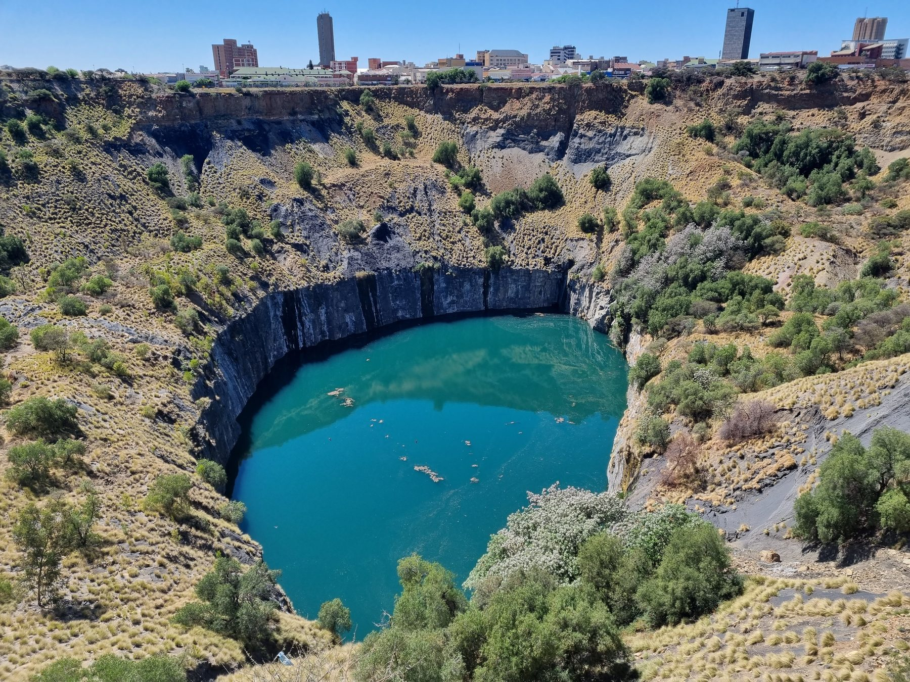
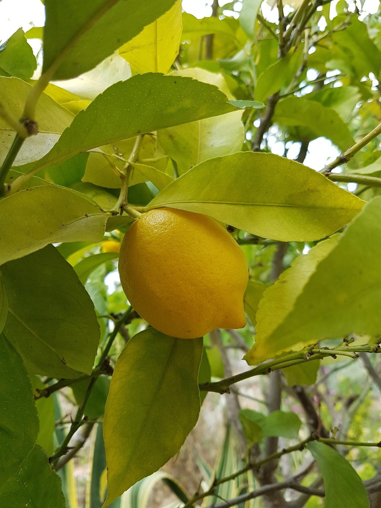
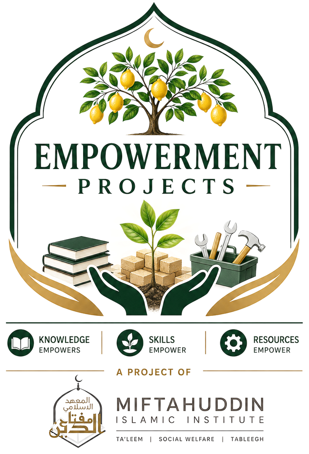

🍳
Kitchen & Cooking
Lemonade, zest, marinades, curd, and the acid that makes every dish pop.
See uses →Every season, thousands of lemons fall, rot, and go straight to waste across our city — while they could be cleaning your kitchen, freshening your home, or lighting up dinner. The Lemon Project exists to close that gap: one household at a time.
Kimberley's streets, gardens, and backyards are lined with lemon trees that produce far more fruit than anyone knows what to do with. Most of it ends up on the ground. The Lemon Project is a community awareness campaign with one simple goal: teach every household in Kimberley just how useful a lemon actually is — in the kitchen, around the house, in the garden, and beyond.

📍 Kimberley, South Africa
of lemons wasted every season across Kimberley gardens
everyday household use cases — cleaning, cooking, garden & more
cost to you — the lemons are already growing outside

The Lemon Project grew out of "The Sour Lemon" skills training programme, part of Empowerment Projects by Miftahuddin Islamic Institute. Knowledge empowers, skills empower, resources empower: every use case, guide and remedy on this site is simple household wisdom the whole Kimberley community can share in.
From your kitchen counter to your garden bed — here's where lemons pull their weight.
Lemonade, zest, marinades, curd, and the acid that makes every dish pop.
See uses →Descale kettles, polish copper, deodorize disposals — no harsh chemicals needed.
See uses →Pest deterrents, compost boosts, and natural spot-weeding for your beds.
See uses →Stovetop potpourri, dried garlands, and candles that smell like sunshine.
See uses →Simple, tested instructions using nothing but lemons and things already in your kitchen.
A five-minute DIY spray that cuts grease and leaves every surface smelling fresh.
Read guide →The Moroccan technique that turns a glut of lemons into months of flavour.
Read guide →The Sour Lemon skills-programme recipe — a spiced, syrup-cured lemon pickle in five minutes prep.
Read guide →Straight from The Sour Lemon skills programme — real hands, real lemons, five minutes start to finish.
Help us grow the list — share your own Kimberley lemon hacks and we'll add them.